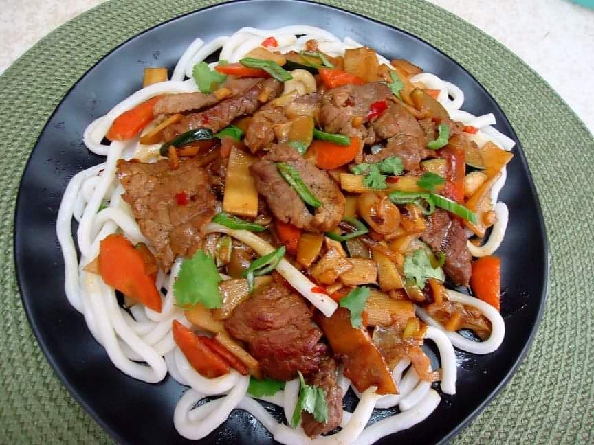

Minútky podľa @mariecookingsvarc — Normy Jedál
Rychlé hovězí plátky s udon nudlemi
#toprecepty #udon#hovezi#hovezimaso#varimeslaskou#vaříme#dobréjídlo#rychlejidlo#minutky#mnamky#mnamka#tohlechutnavsem#cinskenudle#cinskakuchyne#zelenina#zadnihovezi#wok
Potřebujeme:
250 g zadního hovězího
1 mrkev
10 cm cukety
1 jarní cibulka
2 plátky zázvoru
2 stroužky česneku
2 lžíce bambusových výhonků
2 lžíce oleje /arašídový
1 lžíce světlé sójové omáčky
1 lžíce tmavé sójové omáčky
2 lžíce vývaru / nebo vody
1 rovná lžička škrobu
čerstvě mletý černý pepř
dle chuti chilli paprička
Postup přípravy receptu :
V rozpálené wok nebo jiné hluboké pánvi na oleji prudce orestujeme maso nakrájené na plátky velikosti soust, přidáme nasekaný zázvor.a česnek, necháme rozvonět. Přidáme mrkev nakrájenou na tenké plátky a dál restujeme.
Po pár minutách přidáme orestovat i kolečka bílé části cibulky a cuketu, kterou nakrájíme na kolečka a pak na šestiny, promícháme a přilijeme omáčky. Nakonec přidáme bambusové výhonky a zahustíme troškou škrobu rozmíchaným ve vodě nebo vývaru.
Dle chuti opepříme, přidáme chilli a podáváme s undon nudlemi uvařenými podle návodu na obalu. Na talíři můžeme poházet lístky čerstvého koriandru, nasekanou zelenou částí cibulky a kdo má rád přidá smaženou cibulku.